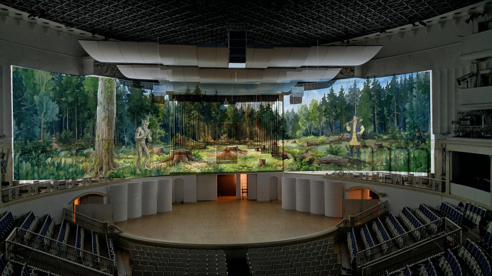
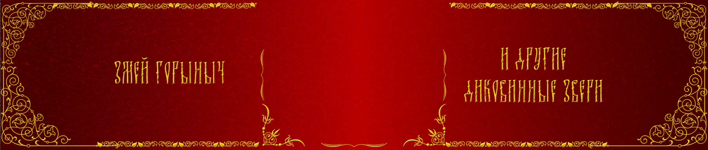

Оркестр Осипова — детям
Национальный академический оркестр народных инструментов России имени Н. П. Осипова
Концертный зал Чайковского · 2026
Видеоконтент
Концертный зал Чайковского · 2026
Видеоконтент

О проекте
Два детских концерта Национального академического оркестра народных инструментов России имени Н. П. Осипова: «Змей Горыныч и другие диковинные звери» — 22 февраля 2026 и «Сказки народов России» — 21 марта 2026. Видеоконтент создавался в сотрудничестве с Алиной Синяковой.
«Змей Горыныч…» ↗
«Сказки народов России» ↗


Оркестр Осипова — детям
Все проекты →